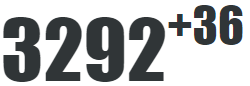
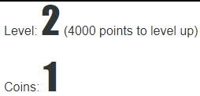

Welcome to TicTrainer™
TicTrainer™ is a web tool meant to help you build your ability to fight tics.
How to use TicTrainer™
At the moment, Microsoft® browsers (Internet Explorer and Edge) don't display TicTrainer™ correctly. Try another browser.
TicTrainer™ only works when a “user” (a person with tics) and a “trainer” (e.g. a parent, a psychologist or a physician) are logged on at the same time. Detailed instructions are in the table below.
| User | Trainer |
|---|---|
| 1. From www.TicTrainer.com, the user clicks “Register,” then “User,” then supplies the information requested and clicks on “Create Account.” This step need only be done once, but you’ll need to record your user account ID and password for future sessions. | 1. From www.TicTrainer.com, the user clicks “Register,” then “Trainer,” then selects birth year and types in a self-selected password. This step need only be done once, but you’ll need to record your user account ID and password for future sessions. |
| 2. Go to Manage Account and log in. In the “Add Trainer” box, type the Trainer Account ID (your trainer will need to supply you that information; usually it will start with the letter “t”). The trainer’s ID should now appear above the “Add Trainer” box. Then click on “Return to Home.” This step need only be done once. | 2. Go to Manage Account and log in. In the “Add User” box, type the Account ID for the person with tics (you will need that information from them; usually it will start with the letter “u”). Click on “Link.” You should see the user’s ID appear near the top of the window. Then click on “Return to Home.” This step need only be done once. |
| 3. Click on “New Session” and log in again. In the “ID to link to” box, type the trainer’s ID (usually it will start with the letter “t”). Then click “Link.” Wait for the Trainer to log in and start the session. | 3. Click on “New Session” and log in again. In the “ID to link to” box, type the ID (usually it will start with the letter “u”). Then click “Link.” Once the “user” is logged in, a “Start” button will appear that you can use to start the session. |
| 4. The screen shows a big number (like 3292, below) and a smaller number (like +36). The big number shows how many points you have earned on the current level. The smaller number is the reward rate, showing how fast you are earning points. The longer you go without a tic, the higher that number gets, and the faster you earn points. Every time you tic, the screen flashes red, and the smaller number resets to zero, but you keep the points you have earned.

Below these numbers your current level is shown. At higher levels, you have to go longer between tics to get points, but you get more points. When you qualify for the next level, the screen flashes green. Your points reset to zero for the new level, but you also earn “coins” that track your long-term progress.  |
4. Every time you see or hear a tic, click on the “Tic Detected” button. If a long time passes between tics, the program will think you aren’t paying attention, and will end the training session early. To prevent this, click on the “I’m here” button before the timer bar reaches the right edge. You can end the session early if you need to with the “End Session” button; this will save the user’s points and level. |
The rationale for TicTrainer™
ERP (Exposure and Response Prevention) is a method previously used to treat Tourette’s syndrome. The idea behind ERP is that by suppressing tics for a very long time, eventually the urge to tic will fade away. It is usually done with a trained psychologist over the course of about ten 90-minute behavior therapy sessions. ERP is not just an interesting idea, it works. ERP was compared to the best-proven behavior therapy for tics (CBIT) in a randomized controlled trial, and both were similarly effective. Unfortunately, although three fourths of parents would like behavior therapy available to their children with tics, many do not have access to an appropriately trained therapist.
So we have designed an alternative method in hopes that it may help you gain more control over your tics. The TicTrainer™ app is used in what we call RE-ERP (Reward-Enhanced Exposure and Response Prevention). The app is meant to build your ability to suppress tics by giving you frequent rewards, kind of like a video game does. You get points, shown on a web page, for holding back your tics for a period of time. Initially you get points for suppressing tics for very short intervals, but as you keep training and your ability grows, you earn points much more quickly when you suppress for longer intervals.
We know you can probably find ways to “game” the system, but we hope you don’t. Mostly that’s because that probably won’t help your tics! But also, we want to see how TicTrainer™ works for you so we can improve it for others, and fake progress will make that harder to do.
Privacy Assurance
TicTrainer™ never asks you for your name or any other personal information, so there is no privacy risk. (We do ask for the month and year the user was born in, but to protect privacy, we don’t even save that! Rather, we save a fake birthdate randomly chosen within a few months of the month you tell us.) We will use the anonymous data to try to learn something about how well TicTrainer™ works, who it works best for, and how to improve it.